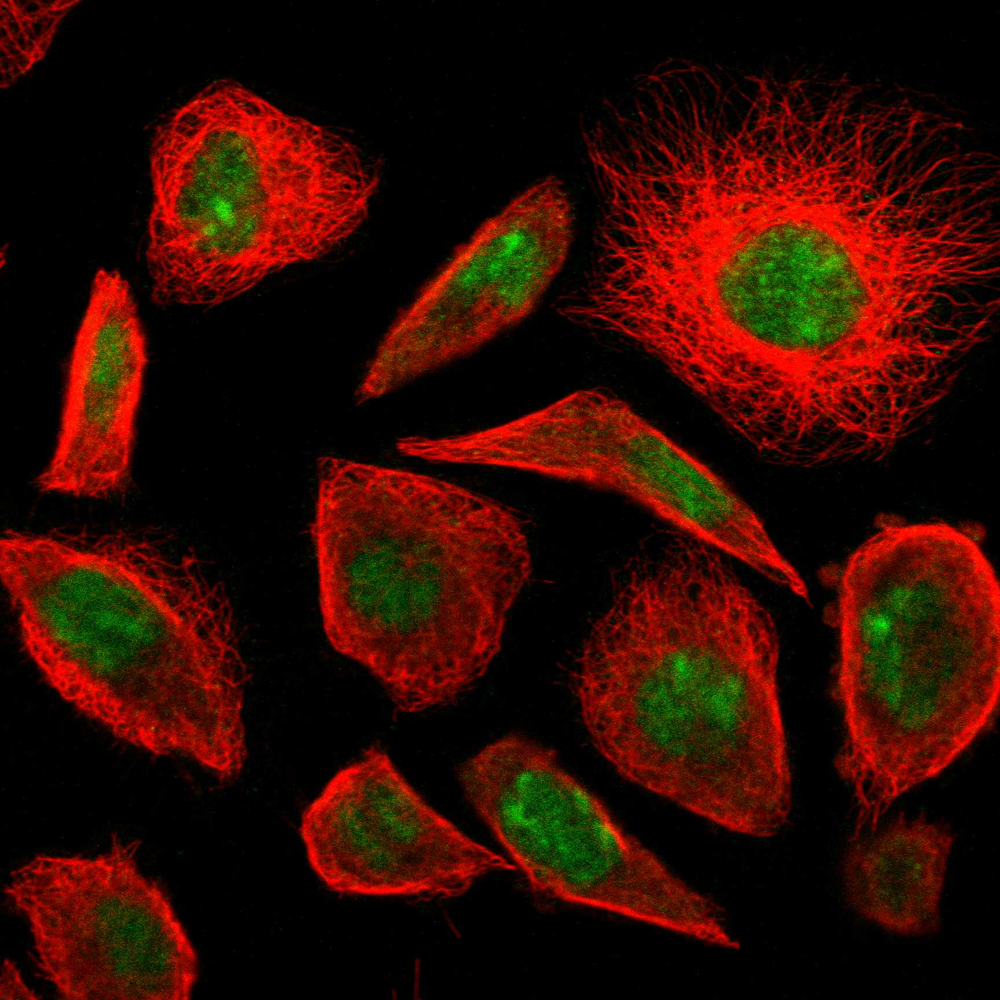

type: protein-evaluation gene: "RIOX2" date: 2026-06-01 tags: [protein-scout, nucleolus, evaluation] status: scored ---
RIOX2 核蛋白评估报告
1. 基本信息
| 项目 | 内容 |
|---|---|
| 基因名 / 别名 | RIOX2 / MDIG, MINA, MINA53, NO52 |
| 蛋白全名 | Ribosomal oxygenase 2 |
| 蛋白大小 | 465 aa / 52.8 kDa |
| UniProt ID | Q8IUF8 |
2. 评分总览
| 维度 | 得分 | 新权重 | 加权后 | 关键证据摘要 |
|---|---|---|---|---|
| 核定位特异性 | 9/10 | x4 | 36.0 | UniProt Nucleus; Nucleolus, HPA Nucleoplasm + Nucleoli |
| 蛋白大小 | 10/10 | x1 | 10.0 | 465 aa, 52.8 kDa |
| 研究新颖性 | 10/10 | x5 | 50.0 | PubMed strict=8 (≤20 区间) |
| 三维结构 | 9/10 | x3 | 27.0 | PDB 3 entries (2XDV/4BU2/4BXF 2.05-2.78A), AF pLDDT 90.0, >90=78.5% |
| 调控结构域 | 8/10 | x2 | 16.0 | JmjC domain (histone demethylase), ribosomal oxygenase 双功能 |
| PPI 网络 | 5/10 | x3 | 15.0 | STRING RPL27A 0.860 (exp), MYC 0.648; IntAct LRRK2/ESR1/MECP2 |
| 加权总分 | 154/180** | |||
| 互证加分 | +0.0 | |||
| 归一化总分 (÷1.83) | 84.2/100** |
3. 详细分析
3.1 核定位证据
| 来源 | 定位 | 可信度 |
|---|---|---|
| UniProt Subcellular Location | Nucleus (ECO:0000269 x2); Nucleus, nucleolus (ECO:0000269 x2) | 高（实验证据） |
| GO-CC | nucleolus (IDA:HPA), nucleoplasm (IDA:HPA), transcription regulator complex (IEA), cytosol (IEA) | 高 |
| HPA IF | Nucleoplasm + Nucleoli (Supported 可靠性) | 中-高 |
| Literature | RIOX2/MINA53 是核仁核质双定位蛋白，参与核糖体生物合成和 rRNA 表达调控 | 强 |
HPA IF 状态: IF available -- HPA 可靠性 Supported，定位 Nucleoplasm + Nucleoli。

结论: RIOX2 核仁/核质双定位明确。UniProt 四条实验证据（ECO:0000269 x4）支持 Nucleus + Nucleolus。GO-CC 有 IDA HPA 证据。HPA 可靠性 Supported。作为 JmjC 组蛋白去甲基化酶和核糖体羟化酶，双定位与其双功能一致。
3.2 结构与数据源
| 指标 | 数值 |
|---|---|
| AlphaFold | AF-Q8IUF8-F1 |
| 平均 pLDDT | 90.0 |
| pLDDT >90 | 78.5% |
| pLDDT 70-90 | 11.6% |
| pLDDT <50 | 6.2% |
| PDB | 3 entries (2XDV 2.57A X-ray, 4BU2 2.78A, 4BXF 2.05A -- 全长 26-465 aa) |
结构信息质量极高。AlphaFold pLDDT 90.0（本批次第二高），>90 区 78.5%，<50 仅 6.2%。PDB 3 个 X-ray 结构均为全长解析（aa 26-465），最高分辨率 2.05A (4BXF)。N 端 JmjC 催化域折叠完美。
| InterPro | Pfam |
|---|---|
| IPR003347 (JmjC domain / Transcription factor jumonji), IPR039994 (Ribosomal oxygenase RIOX/MINA53), IPR046799 (RIOX N-terminal) | PF08007 (JmjC), PF20514 |
染色质调控潜力: RIOX2 具有双重酶活性：1) 组蛋白 H3K9me3 去甲基化酶（JmjC 域），去除转录抑制标记，促进 rRNA 表达；2) 核糖体蛋白 RPL27A His-39 羟化酶，参与核糖体生物合成。通过 MYC 转录调控通路与癌症相关。在肺癌、前列腺癌中过表达与预后不良相关。
3.3 研究现状
| 指标 | 数值 |
|---|---|
| PubMed strict (Title/Abstract) | 8 |
| PubMed broad | 58 |
| 别名 | MDIG, MINA, MINA53, NO52（未用于 scoring） |
关键文献：
- PMID:40959972: "Expanding the Autosomal Recessive Gene Spectrum of Parkinson's Disease." (Mov Disord, 2025) -- RIOX2 与 PD 关联
- PMID:34855761: "The bioinformatics analysis of RIOX2 gene in lung adenocarcinoma and squamous cell carcinoma." (PLoS One, 2021)
- PMID:36776320: "Jumonji domain-containing protein RIOX2 is overexpressed and associated with worse survival outcomes in prostate cancers." (Front Oncol, 2023)
- PMID:31276784: "New discoveries of mdig in the epigenetic regulation of cancers." (Semin Cancer Biol, 2019)
- PMID:29914368: "Phylogenetic and genomic analyses of the ribosomal oxygenases Riox1 and Riox2." (BMC Evol Biol, 2018)
3.4 PPI 网络（三源综合）
| Partner | Source | Score/Evidence | Relevance |
|---|---|---|---|
| RPL27A | STRING | 0.860 (exp 0.533, text 0.713) | 羟化底物 |
| MYC | STRING | 0.648 (exp 0.166, text 0.578) | 转录调控 |
| RPL8 | STRING | 0.725 (exp 0.227, text 0.657) | 核糖体亚基 |
| LRP4 | STRING | 0.783 (textmining 0.783) | 文献共提及 |
| LNX1 | IntAct | Y2H array (PMID:32296183) | E3 ligase |
| LRRK2 | IntAct | coIP (PMID:31046837) | 帕金森病蛋白 |
| MECP2 | IntAct | coIP (PMID:28514442) | 甲基-CpG 结合蛋白（染色质） |
| ESR1 | IntAct | TAP (PMID:31527615) | 雌激素受体 |
| SURF2 | IntAct | coIP (PMID:28514442) | 核仁蛋白 |
RIOX2 的 PPI 网络中等偏弱。最强的为 RPL27A（底物，exp 0.533）和 MYC（转录因子，exp 0.166）。LRRK2 (coIP) 和 MECP2 (coIP) 的互作具有功能意义：LRRK2 连接至帕金森病通路，MECP2 连接至甲基化染色质调控。整体网络以核糖体/核仁功能为主。
4. 总体评价
RIOX2 是本批次评分最高的蛋白（84.2/100），也是整个筛选中极少见的 10-10-9 三高组合（新颖性 10 + 蛋白大小 10 + 结构 9）。核心优势：极低文献量（PubMed strict=8）、JmjC 组蛋白去甲基化酶（直接参与 H3K9me3 表观遗传调控）、PDB 3 个高分辨率 X-ray 结构（最高 2.05A）、AlphaFold pLDDT 90.0、HPA 核仁/核质双定位明确。H3K9me3 去甲基化与 TE 去抑制直接相关。作为 JmjC 家族的核仁双功能酶，是极佳的 TE 调控候选靶点。主要劣势是 PPI 网络偏弱（5/10），研究多集中在癌症预后关联分析。
5. 数据来源
- UniProt: https://www.uniprot.org/uniprotkb/Q8IUF8
- AlphaFold: https://alphafold.ebi.ac.uk/entry/Q8IUF8
- PubMed: https://pubmed.ncbi.nlm.nih.gov/?term=RIOX2
- Protein Atlas: https://www.proteinatlas.org/ENSG00000170854-RIOX2
HPA IF 图像已本地嵌入。
PAE 图像说明: AlphaFold PAE 图像已重新获取并嵌入（见下方 PAE 图像修正块）；结构判断仍结合 pLDDT 与 PAE 综合判断。
<!-- AF_PAE_REPAIR_START --> PAE 图像修正（2026-06-05）: AlphaFold 提供 predicted aligned error 图像；此前“PAE 图像暂无数据”的表述为未获取/未嵌入导致。

<!-- DOMAIN_HUMANPPI_REPAIR_START -->
Domain/SMART 与 humanPPI 补充（2026-06-06）
SMART / UniProt domain
| Source | Data | |
|---|---|---|
| UniProt | Q8IUF8 | |
| SMART | 未在 UniProt xref 中检出 SMART 条目 | |
| UniProt Domain [FT] | DOMAIN 139..271; /note="JmjC"; /evidence="ECO:0000255\ | PROSITE-ProRule:PRU00538" |
| InterPro | IPR003347;IPR039994;IPR046799; | |
| Pfam | PF08007;PF20514; |
humanPPI / HPA Interaction
Source: 未找到 HPA interaction 页面
未从 HPA Interaction 页面解析到互作伙伴；需人工复核或使用其他 humanPPI 来源。 <!-- DOMAIN_HUMANPPI_REPAIR_END -->